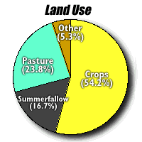
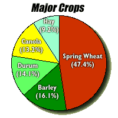
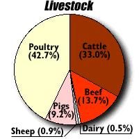
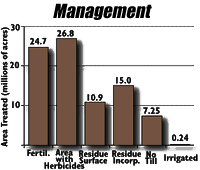
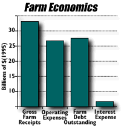

| There were a total of 56,995 farms in 1996 a drop of 6.3% from the previous census in 1991. Only 18,801 farms had gross farm receipts of more than $100,000 |

Approximately 65.7 million acres of the Province is farmland. 46.5 million acres are cultivated. In 1996, the distribution of farm land was as follows
- Cropped (35.6 million acres)
- Summerfallow (10.9 million acres)
- Pasture (15.6 million acres)
- Other uses (3.5 million acres)
|
|

The five major crops in 1996 were:
- Spring Wheat (13.9 million acres)
- Barley (4.7 million acres)
- Durum Wheat (4.1 million acres)
- Canola (3.9 million acres)
- Hay and Fodder (2.6 million acres)
|

The number of animals were:
- Cattle and calves (2.72 million)
- Beef Cows (1.13 million)
- Dairy Cows (38.15 thousand)
- Sheep and lambs (72.46 thousand)
- Pigs (757 thousand)
- Hens and Chickens (3.52 million)
Since the last census (1991) dairy livestock dropped more than 15.8 percent and sheep 21.4 percent. Pigs dropped only 6.4%. In 1998, livestock numbers in the pig industry are poised to increase significantly.
|

Farmers are becoming more aware of the need to protect land from erosion and to maintain soil quality. Since 1991, fertilizer use and minimum tillage have increased substantially.
|

Although farm receipts are up since 1991, so are expenses. The low interest rates in recent years have done much to keep farming profitable. Total outstanding farm debt has decreased by 12.7% since the last census.
|
|